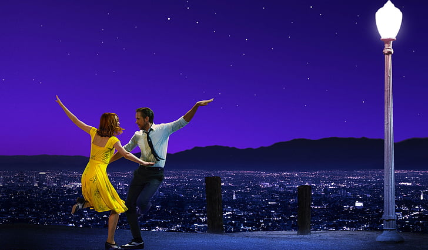
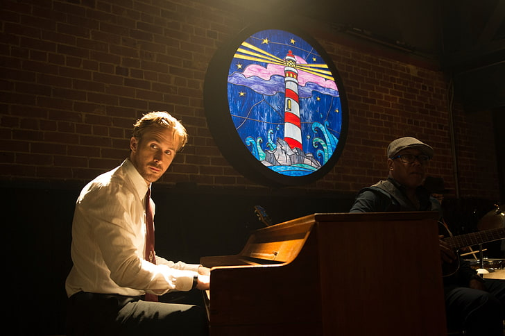
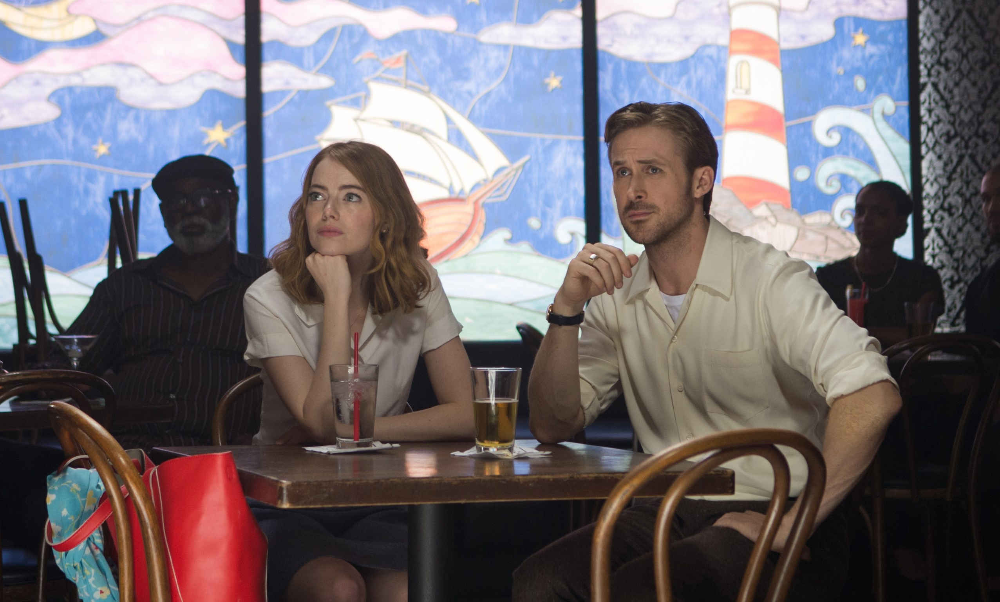

Summary

In Hollywood, Mia is an actress who dropped out of college and moved from small-town Nevada five years ago to pursue her dream. She is enamored with old-tome Hollywood - the movies she grew up on - but hates the cattle-herding feeling of going on auditions and her belief that she needs to schmooze at social events to get ahead in the business. Sebastian is a jazz pianist, his style of jazz in the vein of traditionalists Charlie Parker and Thelonious Monk. He wants to do his part to preserve that tradition, especially as he knows that that style of music is dying. He has trouble emotionally playing music he doesn't like just to get a paying gig. He dreams of opening his own jazz club.
Partly because of their individual struggles and partly because of the situations, their first few chance meetings are antagonistic. But they eventually become attracted to each other largely because of the passion for their dreams that they see in each other. But there are many obstacles to a happily-ever-after. They may be able to endure the struggling-artist life for so long before those struggles take their toll. The pursuit of their individual dreams may take all their energies with nothing left for their relationship. And any compromise each may make in getting ahead may change the person with whom each has fallen in love.
Personal Review

When I get asked, what's your favorite movie? My immediate answer is always La La Land. This movie influenced so much of my love for music (specifically jazz) and for my idealistic view of what Los Angeles is. I don't believe this movie belongs in the genres of "greatest of all time" but rather, a personal pick, one that pulls on our heartstrings and enables a rewatchable story. The musical comedy romance with a twist ending was more than enough for me to watch, and then watch all over again. A movie that doesn't have the complexity of a Christopher Nolan film, so simple yet so lovable.
It was the genius of Justin Hurwitz and his musicality that captivated my ears, giving me more than enough "catchy" songs that could last me a playlist. The plot itself was a thing of beauty, capturing a passion and emotion unlike any other film. The way the film built the characters up and borrowed so much but still kept originality was genuine. The ending was a perfect conclusion to an amazing film.
Music

La La Land, in the end, is still a musical. The perfect balance between film and musical is recipe for the perfect entertainer. The director's own experience with "Whiplash" already showed the audience what he could do. The numbers in this song, incorporating the main theme of Sebastion's dream of Jazz, was special even as standalone songs. Ryan Gosling's dedication to learning the piano and even playing some of the complicated pieces in the film, was dedication level to actors like Christian Bale. Songs like "Another Day of Sun" that shut down an entire LA highway to be filmed, or aesthetic views of Los Angeles in "A Lonely Night" was not only exhilarating but still told a refreshing story.